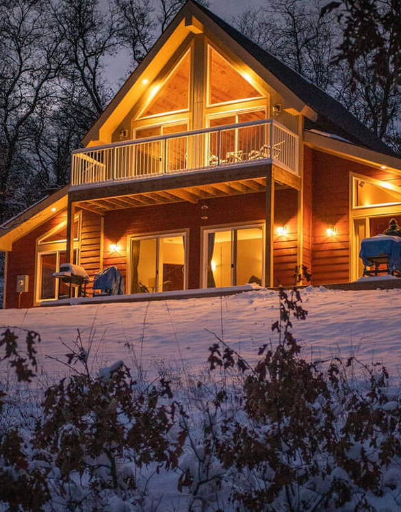
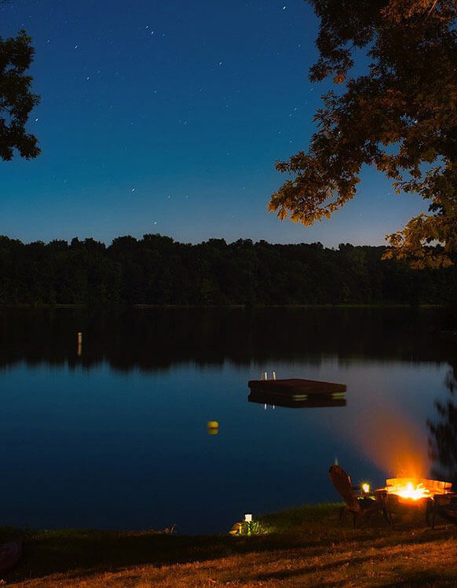
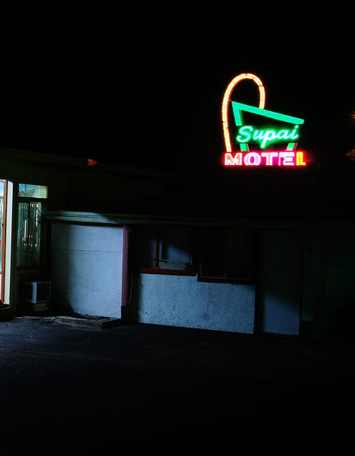
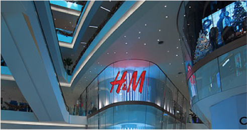

-
WHY NEW JERSEY?
With so many distinct places and experiences, New Jersey is well worth taking the time to explore.
-
REGIONS
-
SHORE
It’s true that New Jersey’s Shore Region has more than 90 miles of white-sand beaches. But with lighthouses, roadside produce stands and more, a beach day here is anything but ordinary.
Beaches as far as the eye can see, with water activities and other things to do, are the hallmark of the Shore Region. Fishing and bird watching are available at Island Beach State Park in Seaside Heights.
-
GATEWAY
Gaze at the majestic Statue of Liberty from New Jersey’s Gateway Region and follow it up with dinner at a diner – this area of New Jersey has the most diners in the world.
The Gateway Region is rich in culture and history. It boasts easy access to Lady Liberty and Ellis Island and is home to the New Jersey Performing Arts Center in Newark, Thomas Edison’s home and lab in West Orange and Liberty Science Center in Jersey City. Also in Jersey City is Empty Sky, the…
-
SKYLANDS
The Garden State’s highest point, the aptly named High Point State Park, is the heart of the Skylands Region and where you can experience the best of the great outdoors.
Stop in Sussex to go up 1,803 feet to New Jersey’s highest point. Hike some (or all!) of the 72 miles of the Appalachian Trail that stretch through The Garden State. Visit Lakota Wolf Preserve in Columbia to observe and listen to packs of wolves or tour Pequest Trout Hatchery to see where the public waters of New Jersey get their stock of more than 700,000 trout annually…
-
DELAWARE RIVER
Welcome to New Jersey’s Delaware River Region, where strolling main streets of days gone by and hiking winding trails in secluded forests make you feel like you’re in another time.
With more than 150 miles of shoreline along Delaware Bay and the Delaware River, the Delaware River Region is a boater’s delight. Rent a canoe or kayak from any number of vendors or visit Delaware River Tubing for a lazy float down the river. For an overnight experience, pitch a tent under the stars in Parvin State Park in Pittsgrove. More into glamping?…
-
GREATER ATLANTIC CITY
Home to New Jersey’s tallest lighthouse, plus sizzling nightlife and luxurious spas, the Atlantic City Region of New Jersey is where greatness lives.
Yes, gaming at the many casino resorts is popular, but Atlantic City offers so much more. Relax in one of the resort spas with a massage, facial or other treatment. Shop more than 100 stores at Tanger Outlets and score some bargains (remember, there’s no sales tax on clothes or shoes!)…
-
SOUTHERN SHORE
Welcome to New Jersey’s Delaware River Region, where strolling main streets of days gone by and hiking winding trails in secluded forests make you feel like you’re in another time.
With more than 150 miles of shoreline along Delaware Bay and the Delaware River, the Delaware River Region is a boater’s delight. Rent a canoe or kayak from any number of vendors or visit Delaware River Tubing for a lazy float down the river. For an overnight experience, pitch a tent under the stars in Parvin State Park in Pittsgrove. More into glamping?…
PLACES TO VISIT
TOP 3 THINGS TO DO THIS SEASON
PLACES TO STAY
-

BED & BREAKFAST
Whether you’re looking to plan a romantic getaway for two or just want to escape for a relaxing weekend with friends…
-

CAMPGROUNDS
Escape from city life and return to nature—if only for a weekend—at one of the many campgrounds in New Jersey.
-
HOTELS & INNS
Find the perfect home base for your getaway with these hotels, bed-and-breakfasts, cozy cabins and more.
-

MOTELS
Looking for a quick and easy stay on a budget? Here are some of New Jersey’s best motels that fit those requirements!
DINING AND SHOPPING
SHOPPING LOCATIONS
OUTLETS

Visitors looking to save money on their holiday shopping don’t have to look far to find great deals on everything from clothing and housewares to specialty foods and gifts — just head to one of the many outlets in New Jersey. In Atlantic City, save up to 70 percent on more than 100 brands at the Tanger Outlets. Nearby is the new Gloucester Premium Outlets in Blackwood, offering 70 stores with savings of up to 65 percent.
A bit farther north, you’ll find 120 outlets to shop…
MALLS
For a traditional mall experience, visit the three-level Newport Centre in Jersey City for more than 130 stores (from H&M and Forever 21 to Coach and Michael Kors) and four department stores.
At Cherry Hill Mall, find ind the perfect gift for everyone on your list, whether you're shopping for a tech junkie (Apple), beauty queen (bareMinerals and Sephora), a fitness guru (Peloton and lululemon athletica), a fashionista (True Religion and Nordstrom)…
SUPPORT LOCAL BUSINESSES
-